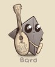
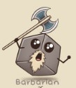

| Photo of class | Class | Hit Dice | Spellcasting Ability | Main Weapons | Jokes! |
|---|---|---|---|---|---|
| Wizard | D6 | Intelligence | Quarterstaff | How many wizards does it take to change a light bulb? That depends. Change it into what? |
|
| Paladin | D10 | Charisma | Almost Any! | Why do paladins wear chainmail? Because it’s holey armor. |
|
| Ranger | D10 | Wisdom | Bow, Shortsword | Where does the ranger keep their arrows? In the monsters! |
|
|  | Bard | D8 | Charisma | Rapier, insults | All the bards I've known were immune to lightning. They were terrible conductors. |
| Cleric | D8 | Wisdom | Hammer, Mace | What is a cleric’s favourite hot drink? Divini-tea! |
|
| Rogue | D8 | Intelligence | Dagger, Javelen, Bow | If the barbarian has ten gold pieces, and the rogue steals half of it, what does the rogue take? 1d12 slashing damage. |
|
|  | Barbarian | D12 | N/A | Great Axe, Any short party member | What do you call a raging barbarian? Anything you like – you can’t make Listen checks while Raging. |
| Sorcerer | D6 | Charisma | Quarterstaff | What’s the difference between a wizard and a sorcerer? Class. |